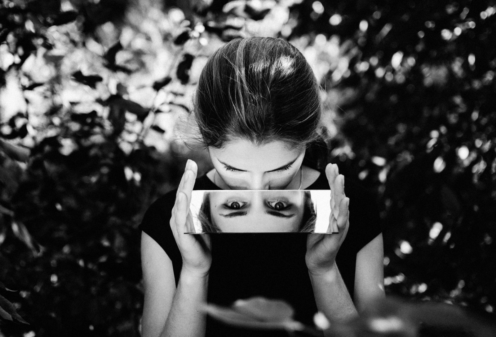

Il Corpo
Che cos'è un corpo normale? È una domanda che, nella mia esperienza di fisioterapista, torna continuamente, anche quando non viene formulata esplicitamente. Esiste un modo giusto di camminare, di stare in piedi, di respirare, di muoversi? Esiste una postura ideale alla quale tutti dovremmo tendere?
La medicina e la riabilitazione hanno bisogno di parametri di riferimento, ci aiutano a riconoscere le alterazioni, a comprendere le difficoltà e a individuare possibilità di miglioramento. Il rischio nasce quando quei parametri diventano un metro con cui giudicare la persona, anziché strumenti per aiutarla.
Ogni corpo ha una sua storia. Ci sono corpi che cambiano lentamente con l'età e altri che vengono trasformati improvvisamente da una malattia, da un trauma, da un intervento chirurgico. Ci sono persone che convivono con una disabilità dalla nascita e altre che devono imparare, a un certo punto della vita, a riconoscersi in condizioni completamente nuove.
Nel mio lavoro incontro spesso persone che non possono più compiere gesti che un tempo erano spontanei: alzarsi da una sedia, fare il primo passo, mantenere l'equilibrio, voltarsi. Azioni apparentemente semplici che diventano impegnative, talvolta impossibili. Eppure, osservando queste persone, mi convinco sempre di più che la postura non possa essere ridotta alla forma che il corpo assume nello spazio. La postura è anche il modo in cui ciascuno si organizza per stare nel mondo, nelle condizioni che gli sono possibili, con le risorse di cui dispone. È una relazione continua tra il corpo, l'ambiente e le persone che incontriamo.
Postura Naturale, in questo senso, non significa necessariamente tornare a una condizione precedente, né raggiungere un modello ideale. Significa cercare il proprio equilibrio possibile, anche quando le condizioni cambiano.
La Polis
Lo sappiamo, viviamo in una società che attribuisce un valore enorme all'efficienza, all'autonomia, alla velocità. Ammiriamo chi non si ferma mai, chi supera gli ostacoli, chi riesce a fare tutto da solo. Persino quando parliamo di disabilità, siamo spesso attratti dalle storie di chi compie imprese straordinarie, quasi che il valore di una persona dovesse essere dimostrato attraverso la capacità di superare i propri limiti.
Ma la vita non è una gara di resistenza. Ci sono condizioni che non possono essere superate, limitazioni con cui occorre convivere, perdite che non possono essere cancellate. Riconoscerle non significa arrendersi, significa partire dalla realtà. La disabilità, del resto, non riguarda soltanto ciò che una persona può o non può fare. Riguarda anche le possibilità che la società le offre.
Pensiamo alla comunicazione. Per una persona che ha perso la voce, o che può esprimersi soltanto attraverso modalità diverse da quelle abituali, il problema non è esclusivamente la difficoltà di parlare. È anche trovare qualcuno disposto ad ascoltare con pazienza, senza anticipare le parole, senza mostrare disagio, senza trasformare ogni conversazione in una prova da superare. Lo stesso accade con il movimento. Una persona che cammina lentamente può sentirsi perfettamente a proprio agio finché non incontra un mondo che pretende da tutti la stessa velocità.
Il corpo ha i suoi limiti, ma l'ambiente può amplificarli oppure ridurne le conseguenze. E allora forse dovremmo cambiare prospettiva. Non domandarci soltanto come aiutare una persona con disabilità ad adattarsi al mondo, ma anche come possiamo rendere il mondo capace di accogliere modi differenti di muoversi, comunicare, partecipare e vivere.
Questo è un compito che riguarda tutti. Ed è profondamente politico.
Il Territorio
Anche le città hanno una postura: lo penso spesso camminando per Viterbo, tra vicoli medievali, piazze, gradini e sanpietrini. Siamo abituati a osservare questi luoghi per la loro bellezza, per la storia che custodiscono, per il senso di appartenenza che suscitano. Ma basta cambiare punto di vista per scoprire un'altra città.
Una città che non tutti possono attraversare con la stessa facilità. Per qualcuno un gradino è un dettaglio, per altri è una barriera. Un percorso di pochi minuti può diventare faticoso, un locale può risultare inaccessibile, un luogo d'incontro può trasformarsi in uno spazio dal quale si resta esclusi. E non ci sono soltanto gli ostacoli fisici: esistono barriere nella comunicazione, nell'organizzazione dei servizi, nella fretta con cui vengono accolte le richieste, nell'incapacità di riconoscere bisogni differenti.
Una città accessibile non è semplicemente una città nella quale si può entrare. È una città nella quale si può partecipare. Significa poter andare a cena, assistere a uno spettacolo, prendere parte a un incontro pubblico, parlare con un impiegato, fermarsi in una piazza senza che ogni gesto richieda uno sforzo supplementare o una spiegazione.
Non si tratta di chiedere concessioni particolari, ma di riconoscere un diritto comune. Il patrimonio storico merita certamente di essere custodito. Ma una città non è fatta soltanto delle pietre che conserva: è fatta soprattutto delle persone che la abitano. E la sua bellezza dovrebbe potersi incontrare con il diritto di tutti a viverla.
L'Azione
Nella pratica della Postura Naturale attribuisco grande importanza agli appoggi. Per mantenere l'equilibrio abbiamo bisogno di un terreno che ci sostenga. Per muoverci dobbiamo continuamente modificare la distribuzione del peso, cercare nuovi punti di riferimento, adattarci a ciò che incontriamo. Nessuno si muove senza appoggi.
E forse questa semplice osservazione può suggerirci qualcosa anche sulle relazioni umane. Siamo portati a considerare l'autonomia come assenza di dipendenza. Ma tutti abbiamo bisogno di sostegno, anche quando non ce ne accorgiamo. Un bastone, una carrozzina, una protesi, un ausilio per comunicare non rappresentano necessariamente una rinuncia all'autonomia. Possono essere, al contrario, strumenti attraverso i quali una persona recupera possibilità di scelta e partecipazione. Così come può esserlo la presenza di qualcuno che ci accompagna, rispettando però la nostra libertà di decidere.
Proviamo allora, nella vita quotidiana, a esercitare uno sguardo diverso. Quando entriamo in un edificio pubblico, chiediamoci chi potrebbe incontrare difficoltà a raggiungerlo. Quando parliamo con qualcuno che comunica lentamente, lasciamogli il tempo di farlo. Quando organizziamo un'attività, domandiamoci chi potrebbe restarne escluso e, soprattutto, ascoltiamo le persone direttamente interessate. Sono gesti piccoli, ma possono modificare profondamente il modo in cui abitiamo lo spazio comune.
Una postura collettiva
Forse il contributo più importante che la disabilità può offrire alla nostra riflessione non è insegnarci il coraggio, la forza o la capacità di superare le avversità ma costringerci a mettere in discussione l'idea stessa di normalità. A riconoscere che non esiste un unico modo legittimo di stare al mondo.
Come fisioterapista, continuo a considerare prezioso ogni progresso che permetta a una persona di muoversi meglio, ridurre il dolore, recuperare una funzione o ritrovare autonomia. Ma so anche che non tutto può essere recuperato e che il valore di una vita non dipende dai risultati della riabilitazione.
Un corpo che cambia non è necessariamente un corpo che vale meno. E una comunità capace di accogliere corpi differenti non diventa soltanto più accessibile. Diventa più umana, perché riconosce la fragilità e l'interdipendenza come dimensioni comuni della nostra esistenza. Allora la Postura Naturale può suggerirci anche un modo diverso di pensare la convivenza. Non un modello al quale tutti devono conformarsi, ma un equilibrio che si costruisce continuamente, facendo spazio alle differenze.
Quando un corpo cambia, non è soltanto quel corpo a dover trovare una nuova postura. Anche il mondo che lo circonda dovrebbe essere disposto a cambiare la propria.
Barbara Matteucci